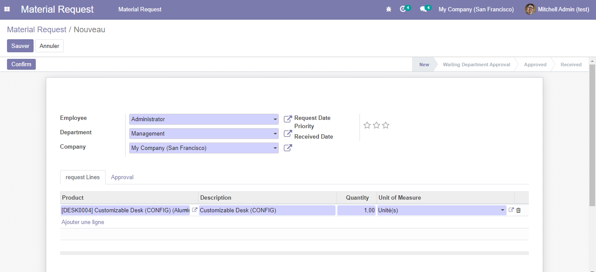

Employee Material Request Management
- Main Features:
- Allow your employees to request work material
- Approval or denial of Department Head.
- Approval or denial of Purchase Requisition Head.
- Request for Purchase Requisition will go to stock/warehouse as internal picking / internal order and purchase order.
- Purchase Requisition user can decide whether product requested by employee will come from stock/warehouse directly or it needs to be purchase from vendor
Material Request View
